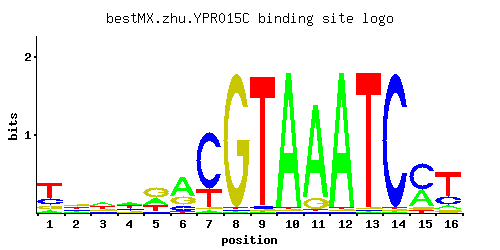

← All factors / TF RECORD
YPR015C
No recorded aliases
Function unknown
01 / RECOMMENDED MATRIX
Best-performing DNA-binding model.

Fisher’s P-valueNo data
Information content14.78
Max PWM score15.13
Recommended cutoff11.36
View and copy the recommended matrices ↘
Position frequency matrix (PFM)
A | 0.08 0.16 0.38 0.38 0.27 0.55 0.02 0.01 0.01 0.97 0.87 0.97 0.01 0.01 0.33 0.09 C | 0.24 0.20 0.17 0.24 0.05 0.17 0.75 0.01 0.02 0.01 0.01 0.01 0.01 0.97 0.58 0.22 G | 0.14 0.34 0.17 0.14 0.46 0.24 0.02 0.97 0.01 0.01 0.11 0.01 0.01 0.01 0.06 0.08 T | 0.54 0.30 0.27 0.25 0.21 0.04 0.22 0.01 0.96 0.01 0.01 0.01 0.97 0.01 0.04 0.61
Position count matrix (PCM)
A | 8 16 38 38 27 55 2 1 1 97 87 97 1 1 33 9 C | 24 20 17 24 5 17 75 1 2 1 1 1 1 97 57 22 G | 14 34 17 14 46 24 2 97 1 1 11 1 1 1 6 8 T | 54 30 27 25 21 4 22 1 96 1 1 1 97 1 4 61
Position weight matrix (PWM)
A | -1.39 -0.69 0.17 0.17 -0.17 0.54 -2.77 -3.47 -3.47 1.11 1.00 1.11 -3.47 -3.47 0.03 -1.27 C | 0.29 0.11 -0.06 0.29 -1.28 -0.06 1.43 -2.89 -2.20 -2.89 -2.89 -2.89 -2.89 1.68 1.17 0.20 G | -0.25 0.64 -0.06 -0.25 0.94 0.29 -2.20 1.68 -2.89 -2.89 -0.49 -2.89 -2.89 -2.89 -1.10 -0.81 T | 0.52 -0.06 -0.17 -0.25 -0.42 -2.08 -0.37 -3.47 1.10 -3.47 -3.47 -3.47 1.11 -3.47 -2.08 0.65
02 / COMPARATIVE BENCHMARKS
Alternative candidate matrices 1
Historical matrix candidates from the original ScerTF database. Expand a source to inspect its original logo, scores, and matrix values.
YPR015CZhao and StormoP = No dataView matrix ↘
03 / EXPERIMENTAL CONTEXT
Gene-level annotations and interactions.
Genes bound in ChIP-chip experiments 1 genes
No Data
Genes affected by TF deletion 1 genes
No Data
Genes supported by both experiments 1 genes
No Data